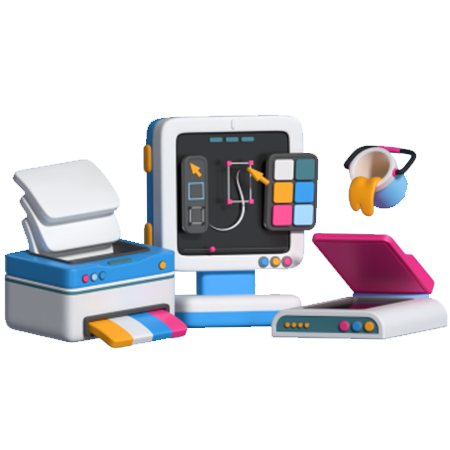
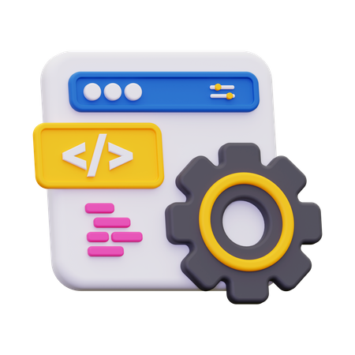

<<<<<<< HEAD
=======
>>>>>>> fac517cbdb2dfd535ab66d3f5fec9ef922db0594
Alfa Tech
Alfa Tech
Tudo sobre tecnologia
Como um Computador Funciona? Guia Simplificado para Iniciantes
Bem-vindo ao mundo dos computadores! Se você sempre se perguntou como esses dispositivos funcionam sem precisar entender jargões complicados, este é o lugar certo para você. Vamos explorar de maneira simples e fácil de entender!
<<<<<<< HEAD
O que é um Computador?
Um computador é uma máquina que realiza cálculos e processa informações para executar tarefas, como abrir um site, escrever um e-mail ou assistir a vídeos. Vamos desmistificar o que está por trás dessa "caixa mágica".
Hardware vs. Software: Qual a Diferença?
Hardware

O que é?: Pense no hardware como as partes físicas do computador que você pode tocar, como a tela, teclado, e peças internas. Saiba mais sobre hardware.
Software

O que é?: O software é o conjunto de instruções e programas que dizem ao hardware o que fazer. Entenda melhor sobre software.
Principais Componentes de um Computador
Processador (CPU)
O que é?: O processador é o "cérebro" do computador. Ele faz todos os cálculos e toma decisões super rápidas. Veja como os processadores funcionam.
Como Funciona?: Imagine o processador como um chef de cozinha que distribui tarefas para a equipe, garantindo que tudo esteja pronto na hora certa.
Memória RAM
O que é?: A memória RAM é como a mesa de trabalho do chef. Quanto maior a mesa, mais pratos (ou tarefas) podem ser preparados ao mesmo tempo.
Por que é Importante?: A RAM guarda informações temporárias enquanto você trabalha, para que o computador possa acessá-las rapidamente. Aprenda mais sobre a RAM.
Armazenamento (HD/SSD)
O que é?: Armazenamento é onde os dados são salvos permanentemente. O HD (Hard Drive) é mais lento, enquanto o SSD (Solid State Drive) é mais rápido.
Exemplo:: Pense no armazenamento como uma estante de livros, onde você guarda suas histórias e documentos. Compare HDs e SSDs.
Curiosidade:: "O HD é como um carro antigo, que demora para arrancar, enquanto o SSD é como um carro esportivo, que acelera rapidamente."
Placa Mãe
O que é?: A placa mãe é como um grande organizador. Ela conecta todos os componentes do computador, permitindo que eles se comuniquem.
Fato Interessante:: "A placa mãe é como uma rodovia, conectando todos os componentes para que o trânsito (informações) flua sem problemas."
O Sistema Operacional: O Gerente do Computador
O sistema operacional (OS) é o programa principal que controla todo o computador. Ele gerencia o hardware e permite que você use aplicativos. Descubra mais sobre Windows, macOS, e Linux.
Como o Computador Executa Comandos?
Quando você clica em um botão ou digita algo, o computador segue um processo em etapas:
Entrada: O computador recebe um comando (ex: você pressiona uma tecla).
Processamento: O processador interpreta o comando e realiza cálculos.
Saída: O computador mostra o resultado (ex: a letra aparece na tela).
Exemplos Práticos
Por que o Computador Fica Lento?: Se a memória RAM estiver cheia de tarefas ou o armazenamento estiver quase cheio, o computador precisa trabalhar mais.
O que Acontece Quando Você Liga o Computador?: O sistema operacional carrega primeiro, preparando tudo para que você possa começar a trabalhar.
Fatos Surpreendentes!
Você sabia?: "O primeiro computador eletrônico, o ENIAC, ocupava uma sala inteira e pesava mais de 27 toneladas!" Leia mais sobre o ENIAC.
Curiosidade:: "Seu smartphone tem um processador semelhante ao de um computador, mas em uma versão menor e mais eficiente." Saiba mais sobre o Snapdragon.
=======
O que é um Computador?
Um computador é uma máquina que realiza cálculos e processa informações para executar tarefas, como abrir um site, escrever um e-mail ou assistir a vídeos. Vamos desmistificar o que está por trás dessa "caixa mágica".
Hardware vs. Software: Qual a Diferença?
Hardware
O que é?: Pense no hardware como as partes físicas do computador que você pode tocar...
Software
O que é?: O software é o conjunto de instruções e programas que dizem ao hardware o que fazer...
Principais Componentes de um Computador
Processador (CPU)
O que é?: O processador é o "cérebro" do computador. Ele faz todos os cálculos e toma decisões super rápidas.
Como Funciona?: Imagine o processador como um chef de cozinha que distribui tarefas para a equipe, garantindo que tudo esteja pronto na hora certa.
Memória RAM
O que é?: A memória RAM é como a mesa de trabalho do chef. Quanto maior a mesa, mais pratos (ou tarefas) podem ser preparados ao mesmo tempo.
Por que é Importante?: A RAM guarda informações temporárias enquanto você trabalha, para que o computador possa acessá-las rapidamente.
Armazenamento (HD/SSD)
O que é?: Armazenamento é onde os dados são salvos permanentemente. O HD (Hard Drive) é mais lento, enquanto o SSD (Solid State Drive) é mais rápido.
Exemplo: Pense no armazenamento como uma estante de livros, onde você guarda suas histórias e documentos.
Curiosidade: "O HD é como um carro antigo, que demora para arrancar, enquanto o SSD é como um carro esportivo, que acelera rapidamente."
Placa Mãe
O que é?: A placa mãe é como um grande organizador. Ela conecta todos os componentes do computador, permitindo que eles se comuniquem.
Analogia: É como a espinha dorsal do corpo humano, mantendo tudo junto.
Fato Interessante: "A placa mãe é como uma rodovia, conectando todos os componentes para que o trânsito (informações) flua sem problemas."
O Sistema Operacional: O Gerente do Computador
O sistema operacional (OS) é o programa principal que controla todo o computador. Ele gerencia o hardware e permite que você use aplicativos. Os sistemas operacionais mais comuns são:
Windows: Popular em PCs.
macOS: Usado em computadores da Apple.
Linux: Um sistema gratuito e de código aberto.
O OS é como um gerente que organiza e coordena todas as tarefas do computador.
Como o Computador Executa Comandos?
Quando você clica em um botão ou digita algo, o computador segue um processo em etapas:
Entrada: O computador recebe um comando (ex: você pressiona uma tecla).
Processamento: O processador interpreta o comando e realiza cálculos.
Saída O computador mostra o resultado (ex: a letra aparece na tela).
Exemplos Práticos
Por que o Computador Fica Lento?: Se a memória RAM estiver cheia de tarefas ou o armazenamento estiver quase cheio, o computador precisa trabalhar mais.
O que Acontece Quando Você Liga o Computador?: O sistema operacional carrega primeiro, preparando tudo para que você possa começar a trabalhar.
Fatos Surpreendentes!
Você sabia?: "O primeiro computador eletrônico, o ENIAC, ocupava uma sala inteira e pesava mais de 27 toneladas!"
Curiosidade: "Seu smartphone tem um processador semelhante ao de um computador, mas em uma versão menor e mais eficiente."
>>>>>>> fac517cbdb2dfd535ab66d3f5fec9ef922db0594
Conclusão
Agora que você tem uma ideia básica de como um computador funciona, lembre-se: é uma máquina complexa que executa milhões de operações por segundo, mas o conceito geral é simples! O hardware faz o trabalho físico, enquanto o software dá as ordens.
Gostou de aprender sobre como um computador funciona?
Fique ligado para mais artigos simplificados sobre tecnologia! Aproveite e compartilhe com seus amigos para que eles também desvendem o mundo dos computadores.